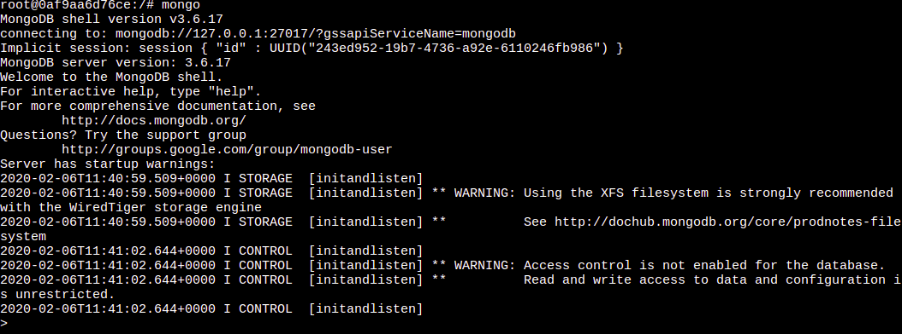
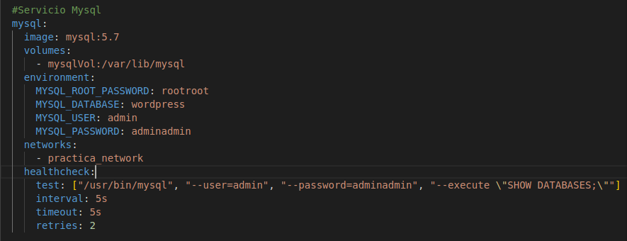

Actividad 6
Graylog es una solución para el almacenamiento centralizado de logs que además permite realizar consultas sobre los datos, crear tablones con los resultados de las mismas, alarmas sobre la presencia o ausencia de datos, etc.
En nuestro caso, Graylog va a funcionar sobre ElasticSearch que es un servidor de búsqueda basado en Lucene. Provee un motor de búsqueda de texto completo, distribuido y con capacidad de multitenencia con una interfaz web RESTful y con documentos JSON
También vamos a usar las bases de MySQL y Mongo estas surgen de la necesidad de tener sistemas de bases de datos altamente disponibles, distribuidos y escalables horizontalmente. La principal diferencia entre estos es que una base es relacional y la otra no.
Por último, esto va a funcionar sobre WordPress que es un sistema de gestión de contenidos que permite crear y mantener un blog u otro tipo de web, es un sistema ideal para un sitio web que se actualice periódicamente.
Primero creamos un archivo docker-compose.yml con la siguiente estructura donde pondremos luego dentro los servicios:
version: "3"
services:
#Aqui van los servicios
networks:
practica_network:
volumes:
elasticVol:
mongoVol:
graylogVol:
mysqlVol:
wordpressVol:
ElasticSearch
Aquí esta su servicio:
Esta funcionando en el puerto indicado:
Mongo
Aquí esta su servicio:
Aquí vemos como funciona:

GrayLog
Aquí esta su servicio:
Aquí vemos como funciona:
MySQL
Aquí esta su servicio:

WordPress
Aquí esta su servicio:
Aquí vemos como se puede instalar:
Comprobar funcionamiento
Creamos un input global de tipo GELF UDP
Para terminar vemos como se ha creado en el Graylog el log del wordpress